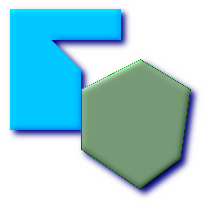
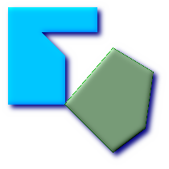
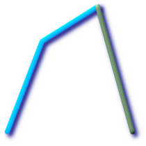
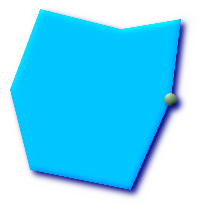

Name
ST_Touches — Returns TRUE if the geometries have at least one point in common,
but their interiors do not intersect.
Synopsis
boolean ST_Touches(geometry
g1, geometry
g2);
Description
Returns TRUE if the only points in common between
g1 and g2 lie in the union of the
boundaries of g1 and g2.
The ST_Touches relation applies
to all Area/Area, Line/Line, Line/Area, Point/Area and Point/Line pairs of relationships,
but not to the Point/Point pair.
In mathematical terms, this predicate is expressed as:

The allowable DE-9IM Intersection Matrices for the two geometries are:
FT*******
F**T*****
F***T****
![[Important]](images/important.png) | |
Do not call with a |
![[Note]](images/note.png) | |
This function call will automatically include a bounding box
comparison that will make use of any indexes that are available on
the geometries. To avoid using an index, use |
 This method implements the OpenGIS Simple Features
Implementation Specification for SQL 1.1. s2.1.1.2 // s2.1.13.3
This method implements the OpenGIS Simple Features
Implementation Specification for SQL 1.1. s2.1.1.2 // s2.1.13.3
This method implements the SQL/MM specification. SQL-MM 3: 5.1.28
Examples
The ST_Touches predicate returns TRUE in all the following illustrations.

| 
|
|

|
| 
|
SELECT ST_Touches('LINESTRING(0 0, 1 1, 0 2)'::geometry, 'POINT(1 1)'::geometry);
st_touches
------------
f
(1 row)
SELECT ST_Touches('LINESTRING(0 0, 1 1, 0 2)'::geometry, 'POINT(0 2)'::geometry);
st_touches
------------
t
(1 row)